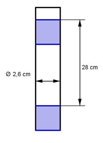

Aufgabe 87 Wie oft muss man mit einer Fahrradpumpe pumpen, (Durchmesser 2,6 cm, Hub 28 cm), wenn 2 l Luft in den Schlauch kommen sollen?

r = d/2 = 2,6 cm/2 = 1,3 cm V = r2 * π * Hub V = 1,32 cm2 * π * 18 cm = 148,6 cm3 2 l = 2 000 cm3 Anzahl der Hübe: 2 000 cm3 n = ------------ = 13,5 148,6 cm3